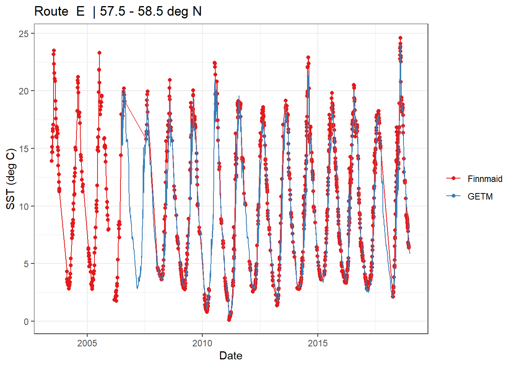

Last updated: 2019-11-13
Checks: 7 0
Knit directory: Baltic_Productivity/
This reproducible R Markdown analysis was created with workflowr (version 1.4.0). The Checks tab describes the reproducibility checks that were applied when the results were created. The Past versions tab lists the development history.
Great! Since the R Markdown file has been committed to the Git repository, you know the exact version of the code that produced these results.
Great job! The global environment was empty. Objects defined in the global environment can affect the analysis in your R Markdown file in unknown ways. For reproduciblity it’s best to always run the code in an empty environment.
The command set.seed(20191017) was run prior to running the code in the R Markdown file. Setting a seed ensures that any results that rely on randomness, e.g. subsampling or permutations, are reproducible.
Great job! Recording the operating system, R version, and package versions is critical for reproducibility.
Nice! There were no cached chunks for this analysis, so you can be confident that you successfully produced the results during this run.
Great job! Using relative paths to the files within your workflowr project makes it easier to run your code on other machines.
Great! You are using Git for version control. Tracking code development and connecting the code version to the results is critical for reproducibility. The version displayed above was the version of the Git repository at the time these results were generated.
Note that you need to be careful to ensure that all relevant files for the analysis have been committed to Git prior to generating the results (you can use wflow_publish or wflow_git_commit). workflowr only checks the R Markdown file, but you know if there are other scripts or data files that it depends on. Below is the status of the Git repository when the results were generated:
Ignored files:
Ignored: .Rhistory
Ignored: .Rproj.user/
Ignored: data/Finnmaid/
Ignored: data/GETM/
Ignored: data/_merged_data_files/
Ignored: docs/figure/
Note that any generated files, e.g. HTML, png, CSS, etc., are not included in this status report because it is ok for generated content to have uncommitted changes.
These are the previous versions of the R Markdown and HTML files. If you’ve configured a remote Git repository (see ?wflow_git_remote), click on the hyperlinks in the table below to view them.
| File | Version | Author | Date | Message |
|---|---|---|---|---|
| Rmd | 6f545ac | jens-daniel-mueller | 2019-11-13 | Revised Laras first Finnmaid_GETM.Rmd |
| Rmd | 53e7f6e | LSBurchardt | 2019-11-01 | wflow_git_commit(“analysis/Finnmaid-GETM.Rmd”) |
| Rmd | c5bf417 | Burchardt | 2019-10-31 | # updates to be able to combine everything meaningfully, check dates, means are currently calculated monthly |
| Rmd | 9ba7162 | Burchardt | 2019-10-25 | #1 code working in console, but not with wflow_build |
| Rmd | 1aee2f6 | Burchardt | 2019-10-25 | #1 transfer code to new workflowr project |
| html | d1026fb | jens-daniel-mueller | 2019-10-17 | Build site. |
| html | def2359 | jens-daniel-mueller | 2019-10-17 | Build site. |
| html | f92b0c2 | jens-daniel-mueller | 2019-10-17 | Build site. |
| html | fb91e8d | jens-daniel-mueller | 2019-10-17 | Build site. |
| Rmd | 860e0fa | jens-daniel-mueller | 2019-10-17 | finalized setup of repo |
Two datasets are compared describing the sea surface temperature (SST) in the Central Baltic Sea. Observational data are provided by the VOS Finnmaid, measuring (amongst others) SST, pCO2, O2, and sea surface salinity (SSS) every minute while commuting between Travemünde and Helsinki. Measurments are taken from the surface water (3m).
The second dataset comprises GETM model data providing information and values for all water depths and locations along the Finnmaid track.
Data are saved in the netcdf format. We describe how to read in the data, compare the relevant variables to finally visualize the relation between both SST estimates.
The documentation of the project is realized with workflowr, combining R Markdown with the version control Github as input for this webside. The following packages are needed.
library(tidyverse)
library(ncdf4)
library(lubridate)
library(geosphere)select_route <- "E"
low_lat <- 57.5
high_lat <- 58.5
var <- "SST"This analysis is performed for observation along the Finnmaid route E, and in a first approach restricted to the daily mean values in the latitude range 57.5 - 58.5 deg N. The investigated variable is SST.
As a first step we want to prepare the data from the GETM model to compare it later. We have some specifications, which files we want to look at first, because we only look at the models from a specific track, which is the Finnmaid track, route E. We want a list of all the files in our modeldata set, that include the pattern = "Finnmaid.E.2d". This pattern is to be searched for in all folders and subfolders of the current working directory, we achieve that by setting recursive = TRUE.
filesList <- list.files(path= "data", pattern = "Finnmaid.E.2d", recursive = TRUE)We now loop through all the files in fileList we created before, to perform the data preparations and save the new arrays. To open a file in the netcdf format we use the openning function of the ncdf4 package.
for (n in 7:length(filesList)) {
file <- filesList[8]
file <- filesList[n]
nc <- nc_open(paste("data/", file, sep = ""))
#lon <- ncvar_get(nc, "lonc")
lat <- ncvar_get(nc, "latc", verbose = F)
time_units <- nc$dim$time$units %>% #we read the time unit from the netcdf file to calibrate the time
substr(start = 15, stop = 33) %>% #calculation, we take the relevant information from the string
ymd_hms() # and transform it to the right format
#t <- ymd_hms("2006-1-1 00:00:00") + ncvar_get(nc, "time")
t <- time_units + ncvar_get(nc, "time")
array <- ncvar_get(nc, var) # store the data in a 3-dimensional array
dim(array) # should be 2d with dimensions: 1575 coordinate, 31d*(24h/d/3h)=248 time steps
array <- as.data.frame(t(array), xy=TRUE)
array <- as_tibble(array)
SST_GETM <- array %>%
set_names(as.character(lat)) %>%
mutate(date_time = t) %>%
gather("lat", "value", 1:length(lat)) %>%
mutate(lat = as.numeric(lat)) %>%
filter(lat > low_lat, lat<high_lat) %>%
group_by(date_time) %>%
summarise_all("mean") %>%
ungroup() %>%
mutate(var = var)
if (exists("SST_GETM_whole")) {SST_GETM_whole <- bind_rows(SST_GETM_whole, SST_GETM)}
else {SST_GETM_whole <- SST_GETM}
nc_close(nc)
rm(array, nc, t, lat, lon, SST_GETM)
}
# using tidyverse write_csv
# write only one data file
# use relative path with here package
SST_GETM_whole %>%
write_csv(here::here("data/_merged_data_files/", file = "GETM_SST_whole.csv"))
rm(SST_GETM_whole, n, file, filesList, time_units)We want to compare the model data to the data actually measured by the VOS Finnmaid. Therefore, we need to prepare the Finnmaid data next. The file we open is called “FM_all_2019_on_standard_tracks.nc” and contains information for the time between 2003 and 2019 for route E. The data from the VOS Finnmaid are read in from a netcdf file created by Bittig & Müller.
#nc <- nc_open(file.choose())
nc <- nc_open(paste("data/Finnmaid/", "FM_all_2019_on_standard_tracks.nc", sep = ""))
print(nc)
attributes(nc$var)
attributes(nc$dim)
# read required vectors from netcdf file
route <- ncvar_get(nc, "route")
route <- unlist(strsplit(route, ""))
date_time <- ncvar_get(nc, "time")
latitude_east <- ncvar_get(nc, "latitude_east")
var <- "SST_east"
array <- ncvar_get(nc, var) # store the data in a 2-dimensional array
#dim(array) # should have 2 dimensions: 544 coordinate, 2089 time steps
fillvalue <- ncatt_get(nc, var, "_FillValue")
array[array == fillvalue$value] <- NA
rm(fillvalue)
#i <- 5
for (i in seq(1,length(route),1)){
if(route[i] == select_route) {
slice <- array[i,]
value <- mean(slice[latitude_east > low_lat & latitude_east < high_lat], na.rm = TRUE)
date <- ymd("2000-01-01") + date_time[i]
#timeseries <- bind_cols(date = date, var=var, value = value)
temp <- bind_cols(date = date, var=var, value = value)
if (exists("timeseries", inherits = FALSE)){
timeseries <- bind_rows(timeseries, temp)
} else{timeseries <- temp}
#rm(temp, value, date)
}
}
nc_close(nc)
#rm(list=setdiff(ls(), c("SST_GETM", "low_lat", "high_lat")))
timeseries_mean <- timeseries %>%
mutate(date_time = as.POSIXct(date)) %>%
#mean of transects from finnmaid (ID)
group_by(date_time) %>%
summarise_all(list(~mean(.,na.rm = TRUE),
~min(., na.rm= TRUE),
~max(., na.rm= TRUE),
~sd(., na.rm = TRUE)))
#rm(array, temp, high_lat,low_lat, nc, slice, var, value)In the following we compare Finnmaid and GETM data. Values are to be compared per day. Therefore, we need to calculate means per day before we continue.
SST_GETM_whole <- {}
SST_GETM_mean <- {}
SST_GETM_whole <- read_csv(here::here("data/_merged_data_files/", file = "GETM_SST_whole.csv"))
#SST_GETM <- read.csv("Finnmaid_E_2d_157.csv") #file nr 157 is the "GETM-test" dataset where data for a whole year was pooled
#SST_GETM$date_time <- as.POSIXct(SST_GETM$date_time)
SST_GETM_whole$date_time <- as.POSIXct(SST_GETM_whole$date_time)
SST_GETM_whole$date_time <- round_date(SST_GETM_whole$date_time, unit = "day")
#timeseries <- timeseries %>%
# mutate(date_time = as.POSIXct(date))
SST_GETM_mean <- SST_GETM_whole %>%
group_by(date_time) %>%
summarise_all(list(~mean(.,na.rm = TRUE)))
SST_GETM_mean$var <- "SST"
#comparison <- cbind(timeseries_mean,SST_GETM_mean)Now we want to plot the SST against time for both timeseries.
#if (exists("timeseries", inherits = FALSE)){
# timeseries <- bind_rows(timeseries, temp)
#} else{timeseries <- SST_GETM_mean}
timeseries_mean <- timeseries_mean %>%
mutate(date_time = as.POSIXct(date_time))
timeseries_mean %>%
filter(date_time >= ymd_h("2003-01-01 T00"),
date_time <= ymd_h("2018-12-31 T24")) %>%
ggplot()+
geom_line(aes(date_time, value_mean, col="Finnmaid"))+
geom_point(aes(date_time, value_mean, col="Finnmaid"))+
geom_line(data=SST_GETM_mean, aes(date_time, value, col="GETM"))+
scale_color_brewer(palette = "Set1", name="")+
labs(x="Date", y="SST (deg C)", title = paste("Route ", select_route," |",low_lat,"-",high_lat,"deg N"))+
#scale_x_datetime(date_breaks = "1 months", date_labels = "%b")+
theme_bw()
sessionInfo()R version 3.5.0 (2018-04-23)
Platform: x86_64-w64-mingw32/x64 (64-bit)
Running under: Windows 10 x64 (build 17763)
Matrix products: default
locale:
[1] LC_COLLATE=English_United States.1252
[2] LC_CTYPE=English_United States.1252
[3] LC_MONETARY=English_United States.1252
[4] LC_NUMERIC=C
[5] LC_TIME=English_United States.1252
attached base packages:
[1] stats graphics grDevices utils datasets methods base
other attached packages:
[1] geosphere_1.5-10 lubridate_1.7.4 ncdf4_1.17 forcats_0.4.0
[5] stringr_1.4.0 dplyr_0.8.3 purrr_0.3.3 readr_1.3.1
[9] tidyr_1.0.0 tibble_2.1.3 ggplot2_3.2.1 tidyverse_1.2.1
loaded via a namespace (and not attached):
[1] tidyselect_0.2.5 xfun_0.10 haven_2.1.1
[4] lattice_0.20-35 colorspace_1.4-1 vctrs_0.2.0
[7] generics_0.0.2 htmltools_0.4.0 yaml_2.2.0
[10] rlang_0.4.1 pillar_1.4.2 glue_1.3.1
[13] withr_2.1.2 RColorBrewer_1.1-2 sp_1.3-1
[16] modelr_0.1.5 readxl_1.3.1 lifecycle_0.1.0
[19] munsell_0.5.0 gtable_0.3.0 workflowr_1.4.0
[22] cellranger_1.1.0 rvest_0.3.4 evaluate_0.14
[25] labeling_0.3 knitr_1.25 broom_0.5.2
[28] Rcpp_1.0.2 scales_1.0.0 backports_1.1.5
[31] jsonlite_1.6 fs_1.3.1 hms_0.5.1
[34] digest_0.6.22 stringi_1.4.3 grid_3.5.0
[37] rprojroot_1.3-2 here_0.1 cli_1.1.0
[40] tools_3.5.0 magrittr_1.5 lazyeval_0.2.2
[43] crayon_1.3.4 whisker_0.4 pkgconfig_2.0.3
[46] zeallot_0.1.0 ellipsis_0.3.0 xml2_1.2.2
[49] assertthat_0.2.1 rmarkdown_1.16 httr_1.4.1
[52] rstudioapi_0.10 R6_2.4.0 nlme_3.1-137
[55] git2r_0.26.1 compiler_3.5.0